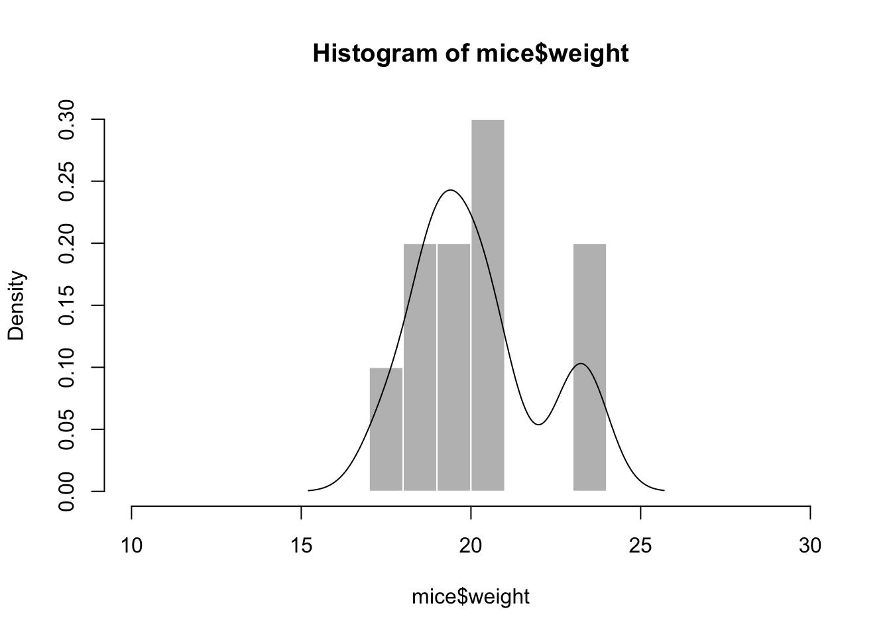
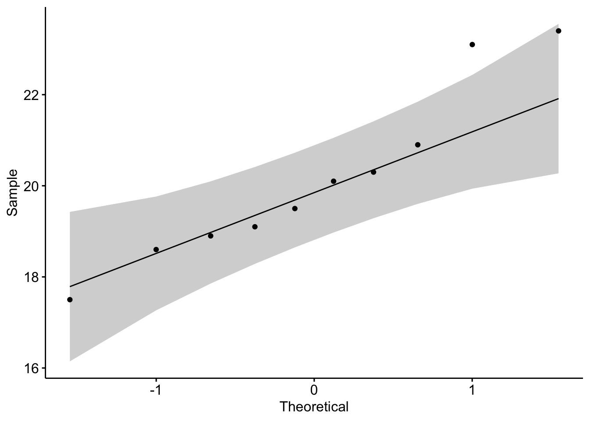
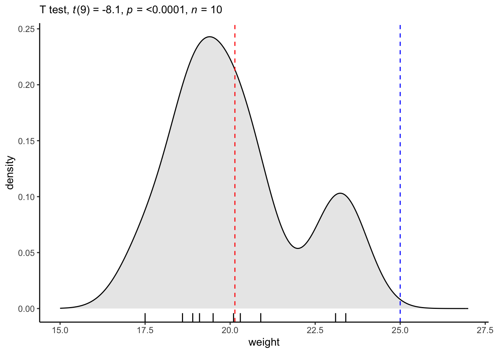
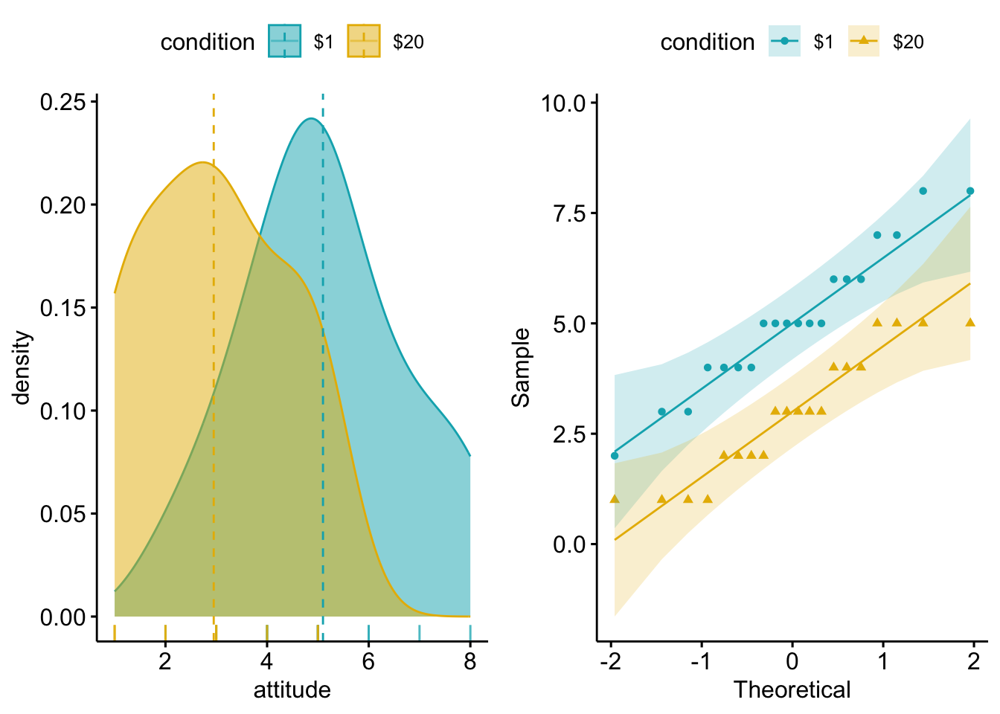
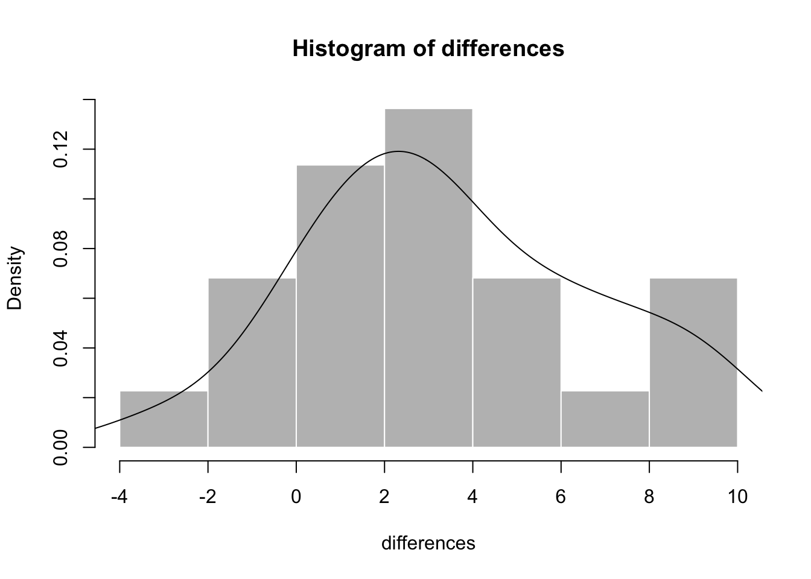
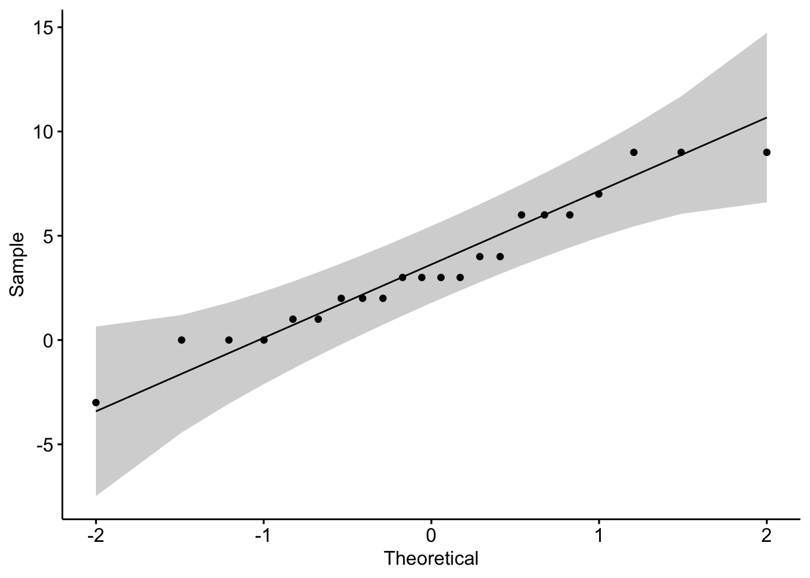

library(datarium)
data(mice)t-test
Class date: Oct 22, 2026
Based in part on lecture notes by Prof. Byoungkwan Lee and 이병관 (2023). 사회과학 연구자를 위한 R을 활용한 기초 통계. 한양대학교출판부.
4.2 단일표본 t-test
Exercise: 생쥐 10마리의 몸무게 평균이 생쥐의 모집단 평균 몸무게 25g과 다른지를 95% 신뢰수준에서 검증해보자.
\(H_{0}:\mu=25\)
\(H_{A}:\mu\neq25\)
STEP1. Check the normality assumption
(1) Visual inspection
hist(mice$weight, breaks=seq(10,30,by=1),
col="grey", border="white",
prob=T, ylim=c(0,0.3))
lines(density(mice$weight))
library(ggpubr)
ggqqplot(mice, "weight")
(2) Descriptive statistics
library(psych)
describe(mice$weight) vars n mean sd median trimmed mad min max range skew kurtosis se
X1 1 10 20.14 1.9 19.8 20.06 1.48 17.5 23.4 5.9 0.52 -1.08 0.6(3) Test statistics
The null hypothesis of the Shapiro-Wilk test is “there is no difference between the distribution of samples and the normal distribution.”
shapiro.test(mice$weight)
Shapiro-Wilk normality test
data: mice$weight
W = 0.92295, p-value = 0.3822STEP2. Conduct t-test
t.test(mice$weight, mu = 25)
One Sample t-test
data: mice$weight
t = -8.1045, df = 9, p-value = 1.995e-05
alternative hypothesis: true mean is not equal to 25
95 percent confidence interval:
18.78346 21.49654
sample estimates:
mean of x
20.14 STEP3. Report the result of t-test
An one-sample t-test was conducted to investigate the difference between the sample data and the population. The assumption of normality based on Shapiro-Wilk normality test was met. The findings indicated that the sample data reported the lower level of weight (M = 20.14, SD = 1.9) than found in the population as a whole, t(9) = -8.1, p < .001.
Present the graphical results [Optional*]
library(rstatix)
stat.test <- mice %>% t_test(weight ~ 1, mu = 25)
library(ggpubr)
ggdensity(mice, x = "weight", rug = TRUE, fill = "lightgray") +
scale_x_continuous(limits = c(15, 27)) +
stat_central_tendency(type = "mean", color = "red", linetype = "dashed") +
geom_vline(xintercept = 25, color = "blue", linetype = "dashed") +
labs(subtitle = get_test_label(stat.test, detailed = TRUE)) +
theme_classic()
4.3 이표본 t-test
*아래부터는 교재 141쪽 4.4 R을 이용한 분석 예제 섹션 참조
4.4.1 독립표본 t-test
Exercise: 인지부조화 이론의 유명한 실험 중 하나인 1달러-20달러 실험(Festinger & Carlsmith, 1959) 연구자들은 “1달러만 제공받은 집단이 20달러를 받은 집단에 비해 자신들이 참여한 실험에 대해 보다 호의적인 태도를 보일 것”으로 예측한다. 연구자들의 가설이 입증되었을까? 이를 α = .05에서 독립표본 t-test를 사용하여 검증해보자.
\(H_{0}:\mu_{1d}=\mu_{20d}\)
\(H_{A}:\mu_{1d}\neq\mu_{20d}\)
attitude <- c(3, 3, 4, 6, 5, 5, 5, 7, 8, 5, 4, 8, 2, 6, 4, 4, 6, 7, 5, 5, 1, 2, 5, 2, 3, 5, 4, 5, 2, 3, 4, 4, 1, 2, 3, 3, 5, 1, 1, 3)
condition <- rep(c("$1", "$20"), c(20,20))
id <- seq(1:40)
festinger <- data.frame(id, condition, attitude)STEP1. Check the normality assumption
(1) Visual inspection
festinger$condition <- as.factor(festinger$condition)
library(gridExtra)
p1 <- ggdensity(festinger, x = "attitude",
add = "mean", rug = TRUE,
color = "condition", fill = "condition",
palette = c("#00AFBB", "#E7B800"))
p2 <- ggqqplot(festinger, x = "attitude",
color = "condition",
palette = c("#00AFBB", "#E7B800"), shape = "condition")
grid.arrange(p1, p2, ncol = 2)
(2) Descriptive statistics
library(psych)
describeBy(festinger$attitude, festinger$condition)
Descriptive statistics by group
group: $1
vars n mean sd median trimmed mad min max range skew kurtosis se
X1 1 20 5.1 1.62 5 5.06 1.48 2 8 6 0.13 -0.77 0.36
------------------------------------------------------------
group: $20
vars n mean sd median trimmed mad min max range skew kurtosis se
X1 1 20 2.95 1.43 3 2.94 1.48 1 5 4 0.08 -1.39 0.32(3) Test statistics
by(festinger$attitude, festinger$condition, shapiro.test)festinger$condition: $1
Shapiro-Wilk normality test
data: dd[x, ]
W = 0.9571, p-value = 0.4876
------------------------------------------------------------
festinger$condition: $20
Shapiro-Wilk normality test
data: dd[x, ]
W = 0.89825, p-value = 0.03825STEP2. Check the homogeneity of variance
library(car)
leveneTest(festinger$attitude, festinger$condition)Levene's Test for Homogeneity of Variance (center = median)
Df F value Pr(>F)
group 1 0.0281 0.8677
38 STEP3. Conduct t-test & calculate effect size
t.test(attitude ~ condition, var.equal = T, data = festinger)
Two Sample t-test
data: attitude by condition
t = 4.4488, df = 38, p-value = 7.301e-05
alternative hypothesis: true difference in means between group $1 and group $20 is not equal to 0
95 percent confidence interval:
1.171665 3.128335
sample estimates:
mean in group $1 mean in group $20
5.10 2.95 library(effsize)
cohen.d(festinger$attitude ~ festinger$condition) #biased
Cohen's d
d estimate: 1.406844 (large)
95 percent confidence interval:
lower upper
0.6918574 2.1218315 cohen.d(festinger$attitude ~ festinger$condition,
hedges.correction=T) #unbiased
Hedges's g
g estimate: 1.378894 (large)
95 percent confidence interval:
lower upper
0.6808511 2.0769366 STEP4. Report the result of t-test
*t-test 결과 표는 그냥 워드에서 직접 만드는게 빠를 수도 있음 주의
library(broom)
library(kableExtra)
model <- t.test(attitude ~ condition, var.equal = T, data = festinger)
# tidy(model, conf.int = TRUE) %>% kable() %>% kable_styling()
tidy(model, conf.int = TRUE) %>%
select(!c(estimate, estimate1, estimate2, method, alternative)) %>%
mutate(M.1 = mean(festinger$attitude[festinger$condition == "$1"]),
SD.1 = sd(festinger$attitude[festinger$condition == "$1"]),
n.1 = length(festinger$attitude[festinger$condition == "$1"]),
M.2 = mean(festinger$attitude[festinger$condition == "$20"]),
SD.2 = sd(festinger$attitude[festinger$condition == "$20"]),
n.2 = length(festinger$attitude[festinger$condition == "$20"]),
LB = conf.low,
UB = conf.high,
t = statistic,
p = p.value,
df = parameter,
cohend = cohen.d(festinger$attitude ~ festinger$condition)$estimate,
hedge = cohen.d(festinger$attitude ~ festinger$condition, hedges.correction = T)$estimate,
.keep = "none") %>%
kableExtra::kbl(caption = "Table 1. Result of t-test and Descriptive Statistics for the Cognitive Dissonance Experiment",
col.names = c("M", "SD", "n", "M", "SD", "n", "LB", "UB", "t", "p", "df", "cohen's d", "hedges' g"),
align = "c", digits = 2) %>%
kableExtra::kable_styling(full_width = FALSE) %>%
kableExtra::add_header_above(c("$1 group" = 3, "$20 group" = 3, "95% CI" = 2, " " = 5)) %>%
kable_classic()| M | SD | n | M | SD | n | LB | UB | t | p | df | cohen's d | hedges' g |
|---|---|---|---|---|---|---|---|---|---|---|---|---|
| 5.1 | 1.62 | 20 | 2.95 | 1.43 | 20 | 1.17 | 3.13 | 4.45 | 0 | 38 | 1.41 | 1.38 |
Using an alpha level of .05, a two-sample independent t-test was conducted to confirm the difference in attitude between the experimental conditions. Before conducting the test, assumption testings were performed. Normality was confirmed based on the Shapiro-Wilk normality test (p = .48 for group $1 and p = .04 for group $20), and homogeneity of variance was confirmed to satisfy based on the Levene’s test (p = .87). Altough the normality of group $20 was not satisfied according to the Shapiro-Wilk normality test (p = .04), the author concluded that the normality of the data was acceptable based on visual inspections.
As the Table 1 indicated, the result demonstrated that the attitude between $1 group (M=5.1, SD=1.62) and $20 group (M=2.95, SD=1.43) is statistically different, t(38) = 4.45, p < .001, 95% CI [1.17, 3.13]. The effect size for this analysis was found as large (Cohen’s d = 1.41, Hedges’ g = 1.38). Therefore, according to the analysis results, we conclude that the minimal justification for behavior leads to cognitive dissonance, which has a statistically significant effect on attitude change.
4.4.2 대응표본 t-test
Exercise: Baumann, Seifert-K essell, and Jones (1992)는 읽기-사고 활동(Directed Reading-Thinking Activity: DRTA)과 소리 내어 생각하기(Think Aloud: TA)와 같은 독서 수행전략이 학생들의 독해력 향상에 효과가 있는지를 실험을 통해 살펴보았다. 이들의 연구에서는 초등학교 4학년 66명의 학생들이 하나의 통제 집단과 두 처치 집단 DRTA 집단과 TA 집단 중 하나에 무작위로 배정되었다. 각 집단의 참가자들은 각각의 처치를 받은 후 독해력 테스트가 수행되었다. 독해력 테스트는 참가 학생들의 독서 오류율, 즉 독서 중에 얼마나 많은 오류가 있었는지를 통해 평가되었다. 예제 데이터 ’reading.csv’에는 DRTA 전략 수행 전후의 독해력 테스트 점수를 담고 있다. 지금부터 DRTA 전략 수행이 학생들의 독해력 향상에 효과가 있었는지를 대응표본 t-test를 이용하여 확인해보자.
\(H_{0}:\mu_{D}=\Delta_{0}\)
\(H_{A}:\mu_{D}\neq\Delta_{0}\)
reading <- read.csv("data/reading.csv", header = T)
differences <- reading$pretest - reading$posttestSTEP1. Check the normality assumption
(1) Visual inspection
hist(differences, col="grey", border="white",prob=T)
lines(density(differences))
ggqqplot(differences)
(2) Descriptive statistics
library(psych)
describe(reading[,3:4]) vars n mean sd median trimmed mad min max range skew kurtosis
pretest 1 22 9.73 2.69 9 9.44 1.48 6 16 10 0.81 -0.40
posttest 2 22 6.23 2.09 6 6.33 1.48 0 11 11 -0.68 2.26
se
pretest 0.57
posttest 0.45describe(differences) vars n mean sd median trimmed mad min max range skew kurtosis se
X1 1 22 3.5 3.25 3 3.44 3.71 -3 9 12 0.19 -0.82 0.69(3) Test statistics
shapiro.test(differences)
Shapiro-Wilk normality test
data: differences
W = 0.95077, p-value = 0.3272STEP2. Conduct t-test & calculate effect size
t.test(reading$pretest, reading$posttest, paired = T)
Paired t-test
data: reading$pretest and reading$posttest
t = 5.0548, df = 21, p-value = 5.267e-05
alternative hypothesis: true mean difference is not equal to 0
95 percent confidence interval:
2.060046 4.939954
sample estimates:
mean difference
3.5 #Pivot data from wide to long
library(tidyr)
reading.l <- reading %>%
pivot_longer(cols = c(pretest, posttest),
names_to = "Group",
values_to = "reading.error") %>%
select(-group)
head(reading.l, 3)# A tibble: 3 × 3
id Group reading.error
<int> <chr> <int>
1 1 pretest 7
2 1 posttest 6
3 2 pretest 7library(rstatix)
reading.l %>%
rstatix::cohens_d(reading.error ~ Group, paired=T)# A tibble: 1 × 7
.y. group1 group2 effsize n1 n2 magnitude
* <chr> <chr> <chr> <dbl> <int> <int> <ord>
1 reading.error posttest pretest -1.08 22 22 large reading.l %>%
rstatix::cohens_d(reading.error ~ Group, paired=T, hedges.correction=T)# A tibble: 1 × 7
.y. group1 group2 effsize n1 n2 magnitude
* <chr> <chr> <chr> <dbl> <int> <int> <ord>
1 reading.error posttest pretest -1.04 22 22 large STEP3. Report the result of t-test
*t-test 결과 표는 그냥 워드에서 직접 만드는게 빠를 수도 있음 주의
library(broom)
library(kableExtra)
model <- t.test(reading$pretest, reading$posttest, paired = T)
d <- reading.l %>%
rstatix::cohens_d(reading.error ~ Group, paired=T)
g <- reading.l %>%
rstatix::cohens_d(reading.error ~ Group, paired=T, hedges.correction=T)
tidy(model, conf.int = TRUE) %>%
select(!c(estimate, method, alternative)) %>%
mutate(M.1 = mean(reading$pretest),
SD.1 = sd(reading$pretest),
n.1 = length(reading$pretest),
M.2 = mean(reading$posttest),
SD.2 = sd(reading$posttest),
n.2 = length(reading$posttest),
LB = conf.low,
UB = conf.high,
t = statistic,
p = p.value,
df = parameter,
cohend = d$effsize,
hedge = g$effsize,
.keep = "none") %>%
kableExtra::kbl(caption = "Table 2. Result of t-test and Descriptive Statistics for Reading Ability by Directed Reading Activity",
col.names = c("M", "SD", "n", "M", "SD", "n", "LB", "UB", "t", "p", "df", "cohen's d", "hedges' g"),
align = "c", digits = 2) %>%
kableExtra::kable_styling(full_width = FALSE) %>%
kableExtra::add_header_above(c("Pre" = 3, "Post" = 3, "95% CI" = 2, " " = 5)) %>%
kable_classic()| M | SD | n | M | SD | n | LB | UB | t | p | df | cohen's d | hedges' g |
|---|---|---|---|---|---|---|---|---|---|---|---|---|
| 9.73 | 2.69 | 22 | 6.23 | 2.09 | 22 | 2.06 | 4.94 | 5.05 | 0 | 21 | -1.08 | -1.04 |
Using an alpha level of .05, a paired-sample t-test was conducted to examine the influence of Directed Reading-Thinking Activity (DRTA) on the average reading ability of pupils. Before the test, the normality was confirmed based on the Shapiro-Wilk normality test (p = .33).
As the Table 2 indicated, the result demonstrated a statistically significant decrease in reading errors after exposure to DRTA (M=6.23, SD=2.09) compared to before DRTA (M=9.73, SD=2.69), t(21) = 5.05, p < .001, 95% CI [2.06, 4.94]. The effect size for this analysis was large (Cohen’s d = -1.08, Hedges’ g = -1.04). Therefore, based on the analysis results, we can conclude that DRTA has a positive effect on reducing reading errors.
Cf. When assumptions are violated, what should be done?
Normality
*The normality assumption is not a robust assumption.
Non-parametric method (e.g., Wilcoxon Signed-Rank Test)
wilcox.test(festinger$attitude ~ festinger$condition, data = festinger)
Wilcoxon rank sum test with continuity correction
data: festinger$attitude by festinger$condition
W = 333, p-value = 0.0002748
alternative hypothesis: true location shift is not equal to 0Robust t-test
library(WRS2)
yuen(attitude ~ condition, data = festinger) #Yuen's testCall:
yuen(formula = attitude ~ condition, data = festinger)
Test statistic: 4.4486 (df = 21.98), p-value = 2e-04
Trimmed mean difference: 2.08333
95 percent confidence interval:
1.112 3.0546
Explanatory measure of effect size: 0.77 akp.effect(attitude ~ condition, data = festinger) #Robust Cohen's d$AKPeffect
[1] 1.532218
$AKPci
[1] 0.6010449 2.2966200
$alpha
[1] 0.05
$call
akp.effect(formula = attitude ~ condition, data = festinger)
attr(,"class")
[1] "AKP"yuenbt(attitude ~ condition, data = festinger, nboot = 5000) # Yuen's test bootstrappedCall:
yuenbt(formula = attitude ~ condition, data = festinger, nboot = 5000)
Test statistic: 4.5287 (df = NA), p-value = 0
Trimmed mean difference: 2.08333
95 percent confidence interval:
1.1074 3.0593 Homogeneity of variance
Welch’s t-test
t.test(attitude ~ condition, data = festinger)
Welch Two Sample t-test
data: attitude by condition
t = 4.4488, df = 37.44, p-value = 7.48e-05
alternative hypothesis: true difference in means between group $1 and group $20 is not equal to 0
95 percent confidence interval:
1.171185 3.128815
sample estimates:
mean in group $1 mean in group $20
5.10 2.95